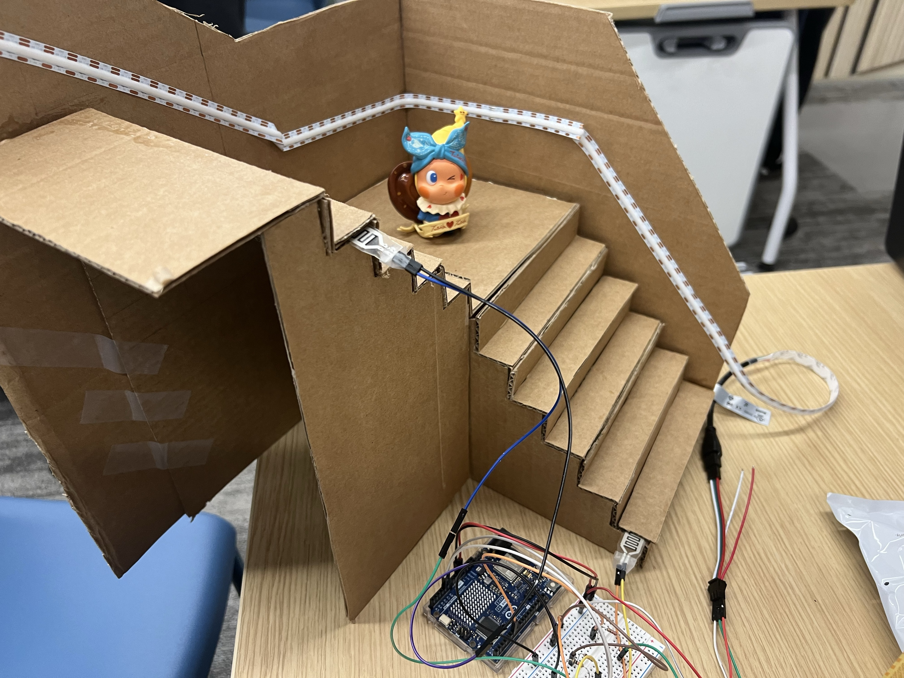
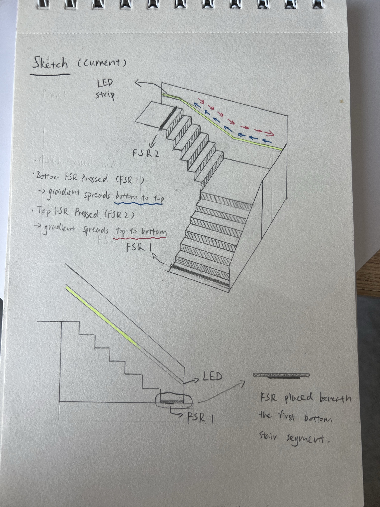
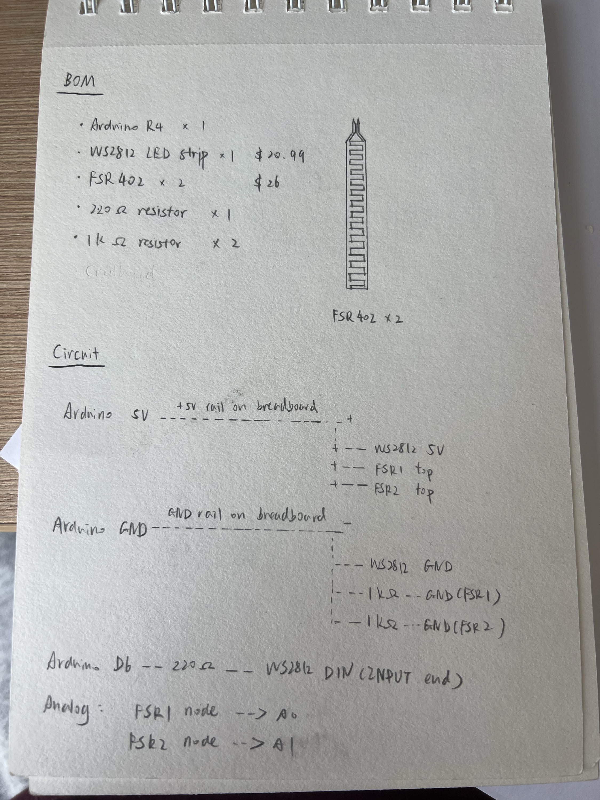
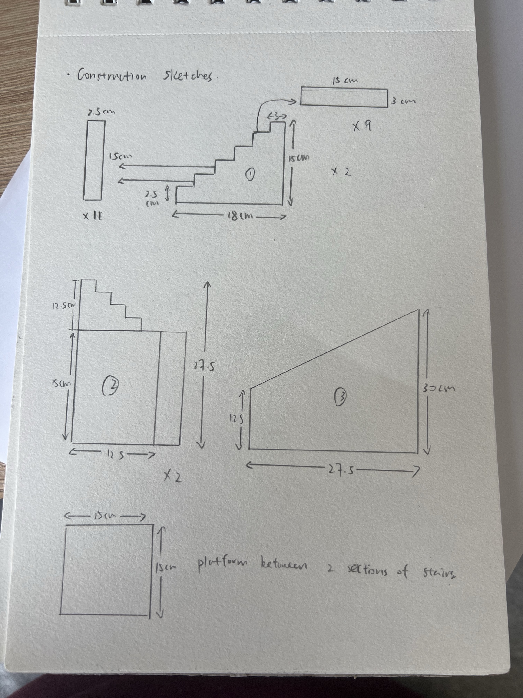

April 2026
Footstep Gradient Stair Light
Pressure-Triggered Lighting for Dim Staircases

Overview
An interactive stair lighting system built with an Arduino R4, two force-sensitive resistors (FSRs) and an addressable WS2812 LED strip. One FSR sits at the bottom of a stair segment and one at the top.
Stepping on the bottom sensor lights a smooth warm-yellow gradient that spreads from bottom to top. Stepping on the top sensor spreads it from top to bottom.
The inspiration came from walking on dim staircases, where even simple lighting can improve safety and comfort.
Parts list
- Arduino R4
- Reads the pressure sensors and drives the LED animation.
- FSR 402 × 2
- Force-sensitive resistors at the bottom and top of the stairs that detect footsteps.
- WS2812 LED strip
- Addressable strip that shows the warm-yellow gradient.
- Cardboard
- Main material of the staircase model.
Modeling
A scale model of a staircase with two flights joined by a 15 × 15 cm landing, drawn with dimensions before building.
Each flight has two side profiles (18 cm long, 15 cm high, 2.5 cm steps), 15 × 3 cm treads and 15 × 2.5 cm risers, plus a sloped wall panel for the strip (27.5 cm long, 12.5 to 30 cm high).
FSR1 is placed beneath the first stair segment at the bottom, FSR2 at the top landing, and the LED strip runs along the wall side.



Interaction
A valid press plays the lighting animation, keeps the strip on for 5 seconds, then fades out to reset for the next interaction.
Electronics
5V rail: WS2812 power and the top end of both FSRs. GND rail: WS2812 ground and a 1 kΩ pull-down resistor for each FSR, forming a voltage divider.
FSR1 node to A0, FSR2 node to A1. Arduino D6 to a 220 Ω resistor to the WS2812 data input.
Signal processing (code logic)
Calibration: at startup, read each FSR for about 2 seconds and average the readings into a baseline, then set threshold = baseline + offset.
Thresholding: a sensor counts as pressed when its reading is above the threshold.
Debouncing: trigger only when the press state changes and enough time has passed since the last edge, to reduce false triggers from sensor noise.
Problems and solutions
Sensing method: I first planned to detect a person’s position with ultrasonic sensors, but readings were inconsistent because ultrasonic depends on clean reflections and is sensitive to angle. The lights sometimes triggered when someone only approached at an angle without stepping on the stairs. I switched to FSRs, which sense actual contact.
Timing and responsiveness: long LED animations made the system feel unresponsive to new inputs. I tuned the animation speed and timing so the effect looks smooth but still feels responsive.